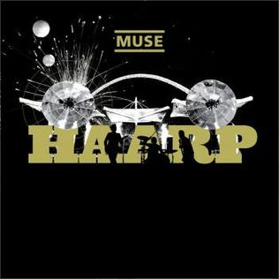

2006년 6월 28일 출시한 'Muse'의 4번째 정규 엘범이다. 'Muse'의 2개의 명반 중 하나이며 , 개인적으로 'Muse'의 엘범 중 2번째로 좋아하는 엘범이다.
이 엘범을 통해서, 최초로, 우리나라로 투어를 왔으며, 이 엘범 이후, 'Muse'의 라이브 엘범인 'H.A.A.R.P'가 나오며 개인적으로 최고의 'Muse' 라이브 무대가 나온다. (앞서 2007 Wembley Stadium에서 보여준 라이브 무대가 바로 이 'H.A.A.R.P' 라이브 엘범이다.)

'Muse'의 라이브 엘범 'H.A.A.R.P'의 사진 (사진 클릭시 엘범 곡 리스트 및 정보 확인가능)
엘범의 특징
이전에 비해 신디사이저의 비중이 늘어난 앨범이며, 팬들에게 가장 널리 알려진 '카오스패드'도 이때부터 쓰기 시작했다. 이러한 시도는 6집으로 이어지게 된다. 또한 기존 앨범들에 비해 멜로디가 훨씬 밝고 사운드 또한 절제되어 있어, 이전의 과격한 사운드에 진입장벽을 느끼던 리스너들에게도 추천되는 앨범이다.
전작에서 앨범 구성에 있어 통일성과 유기성에 큰 비판을 받았으나, 이 앨범의 경우 'Muse' 커리어 전체를 통틀어서도 트랙 배치가 뛰어나다는 평가를 받는다. 또한 각 곡들별로 다양한 사운드를 선보였음에도 그 완성도가 훌륭하였기에, 평론가들에게 특히 큰 사랑을 받는 앨범이기도 하다.
이 엘범을 보여줌으로서, 이제 '라디오헤드'의 아류 밴드라는 소리는 사라지기 시작했다.
출처 : https://namu.wiki/w/Black%20Holes%20and%20Revelations
수록곡♬
곡 제목
추천도
Take a Bow
★★★☆☆
Starlight
★★★★★
Supermassive BlackHole (Title Song♬)
★★★★☆
Map of the Problematique
★★★☆☆
Soldier's Poem
★☆☆☆☆
Invincible
★★★☆☆
Assassin
★★★☆☆
Exo-Politics
★☆☆☆☆
Darkshines
★☆☆☆☆
City of Delusion
★☆☆☆☆
Hoodoo
★☆☆☆☆
Knights of Cydonia
★★★★★
대표적 추천곡♬
1. Starlight
개인적으로 'Muse'를 알게해준 곡이다. 잔잔하면서도 평범한 락 밴드의 곡일 수 있지만, 가사를 들어보면 굉장히 인상깊은 곡이다. 'Muse'의 대표곡중 하나이자, 미국에선 이 곡이 이 엘범 다른 수록곡들과 이전 엘범의 곡들에 비해 모두를 뛰어넘는 성공을 거뒀으며, 이후부터 'Muse'가 미국에서 성공할수 있게된 계기가된다.
VIDEO
★LIVE 공연 at Rome Olympic Stadium in 2013★
2. Supermassive BlackHole
'Muse'의 4집엘범 'Blackholes and Revealtions'의 대표적 타이틀 곡이다. 기존의 'Muse'곡들과는 확실히 다른 곡이다. 기존 곡에서 찾아보기 힘든 댄서블한 비트를 사용한 곡이며, 우리나라에서도 다양한 곳에서 이 곡이 활용됐다.
'트와일라잇' 에서 뱀파이어들이 야구하는 장면에서 이 곡이 사용됐다.
VIDEO
※영화 '트와일라잇' 야구장면
거대한 블랙홀이 운하를 집어삼키듯이, 자신도 사랑하는 그녀를 짐어삼킬 것이라는 함축적 의미가 담겨있다.
VIDEO
★LIVE 공연 at Mayan Theater in Los Angeles in 2015★
3. Map of Problematique
매력적인 전자음이 있는 곡으로, 신스 엔진을 사용한거라 기타 이펙터로 재현하는 것이 상당히 복잡한 곡이다. '2012 런던 올림픽'의 개막식 카운트다운에서 이 노래가 나왔다.
VIDEO
2012 London Olympic CountDown ※2분 20초에 등장한다.※
너를 만난 이후로 나의 외로움은 사라질 것이라고 상상하며 좋아하는 곡이다.
VIDEO
★LIVE 공연 at Glastonbury in 2016★
4. Invincible
'Muse'답지 않고 오히려 'U2'느낌이 나는 곡이다. 'New Born'처럼 와미페달을 밟는 기타솔로 연주가 인상깊다.
VIDEO
★LIVE 공연 at Royal Albert Hall in 2008★
5. Knights of Cydonia
개인적으로 'Muse'곡 중 가장 좋아하는 곡이다. 'Muse' 콘서트의 클라이막스를 책임지는 곡이며, 대부분 마지막 곡으로 이 곡을 부르곤 한다. 라이브 공연에서, '크리스'의 하모니카 연주를 시작으로 가열을 시킨 뒤 노래를 시작한다. 가사는 많이 없지만, 그만큼, 많은 기타연주와 드럼연주가 인상적이다. 서부풍 느낌이 나는 것이 이 곡의 특징이다.
VIDEO
★LIVE 공연 at iConcerts in 2008★